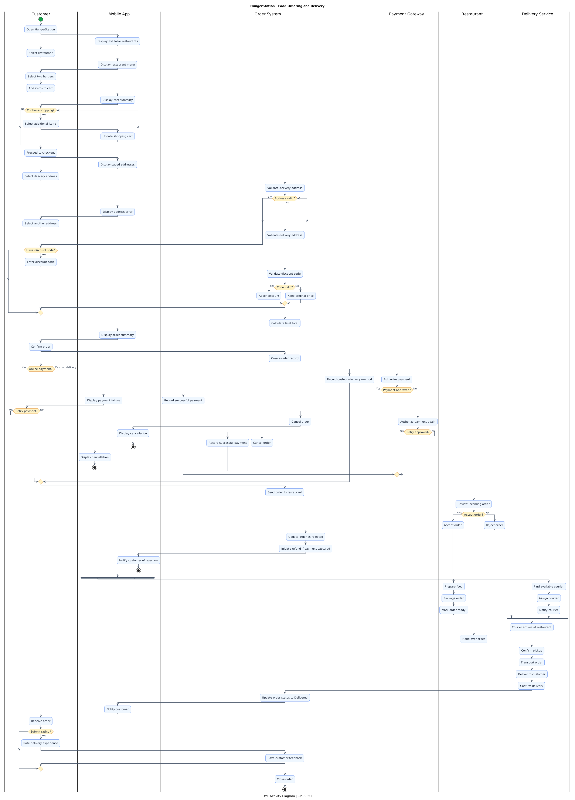
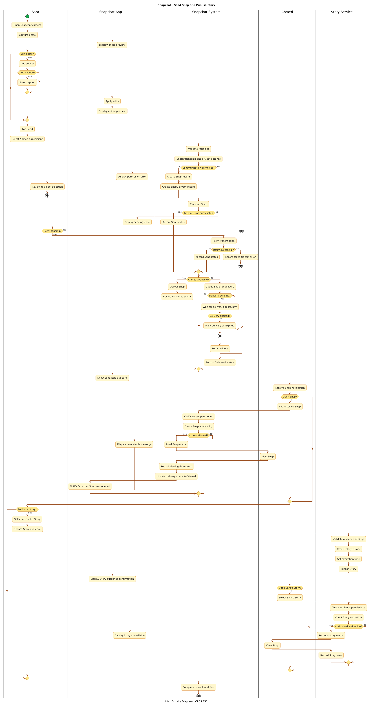

Real-World Activity Diagram Case Studies
Trace one object's lifecycle through states, events, guarded transitions, and outcomes using HungerStation and Snapchat.
Read UML activity diagrams using initial and final nodes, action nodes, decision/merge nodes, guarded flows, loops, fork/join synchronization, and activity partitions (swimlanes). Explain who performs each action and how alternative paths affect the workflow.
How does work move across participants?
Unlike a sequence diagram, which emphasizes message exchange, or a state machine, which describes the states of one object, an activity diagram describes the flow of actions, decisions, and responsibilities in a process.
[Yes] and [No] act as guards.HungerStation — Food Ordering and Delivery
Scenario: Ahmed chooses a restaurant, adds two burgers to his cart, confirms an address, optionally applies a discount, and places the order. The payment gateway, restaurant, and delivery service cooperate to fulfill the request. This diagram models the end-to-end workflow, not the lifecycle of one Order object.

Use the full-resolution view to inspect individual guards and swimlane handoffs. On mobile, zoom in to read the actions.

Follow the workflow
- Start and actions: Ahmed opens the app, selects food, and proceeds to checkout.
- Loops: The customer can add more items or correct an invalid address.
- Decisions: Optional discounts, payment success/failure, and restaurant acceptance create guarded branches.
- Swimlanes: Customer, Mobile App, Order System, Payment Gateway, Restaurant, and Delivery Service identify responsibility.
- Fork and join: Preparing the food and assigning a courier can happen in parallel; the workflow synchronizes before pickup.
- Final outcomes: The order can be completed, cancelled after payment failure, or rejected by the restaurant.
| UML element | Example in diagram | Meaning |
|---|---|---|
| Action | Validate delivery address | Work performed |
| Decision | Payment approved? | Selects one guarded branch |
| Loop | Continue shopping? | Repeats selected actions |
| Fork/join | Prepare food || Assign courier | Concurrent activities and synchronization |
| Swimlane | Payment Gateway | Responsibility for authorization |
Snapchat — Send Snap and Publish Story
Scenario: Sara captures and optionally edits a photo, sends it to Ahmed, and may also publish it as a Story. The system checks communication permissions, transmits the Snap, handles retries, and records delivery or viewing. Story access depends on audience settings and expiration.


Follow the workflow
- Optional branch: Sara can send an unedited Snap or add stickers and captions first.
- Guarded permission: A SnapDelivery record is created only when communication is permitted.
- Retry and waiting: Transmission and delivery may require additional attempts when unavailable.
- Different actions: Sending, delivering, and viewing are distinct workflow steps.
- Responsibility: Sara acts in her swimlane; the Snapchat System validates delivery; Ahmed opens content; the Story Service manages audience rules.
- Story decisions: Publication is optional, and viewing depends on authorization and availability.
| UML element | Example in diagram | Meaning |
|---|---|---|
| Decision | Edit photo? | Optional editing path |
| Guard | Communication permitted? | Privacy requirement |
| Loop | Delivery pending? | Repeated delivery attempt |
| Action | Record viewing timestamp | Update per-recipient data |
| Swimlane | Story Service | Audience and expiration checks |
One UML language, two workflows
| Concept | HungerStation | Snapchat |
|---|---|---|
| Main workflow | Order and deliver food | Send Snap and publish Story |
| Decisions | Payment approved? Restaurant accepts? | Permission allowed? Access available? |
| Optional behavior | Discount and feedback | Editing and Story publication |
| Repeated behavior | Add items, retry payment | Retry transmission/delivery |
| Parallel behavior | Prepare food and assign courier | Not explicitly modeled |
| Key lesson | Cross-functional fulfillment | Privacy and per-recipient delivery |
Start with actions and responsibility. Add decision/merge nodes for alternatives, loops for repetition, and fork/join bars only for genuinely concurrent work. Keep the diagram focused on workflow—not object lifecycles or message order.